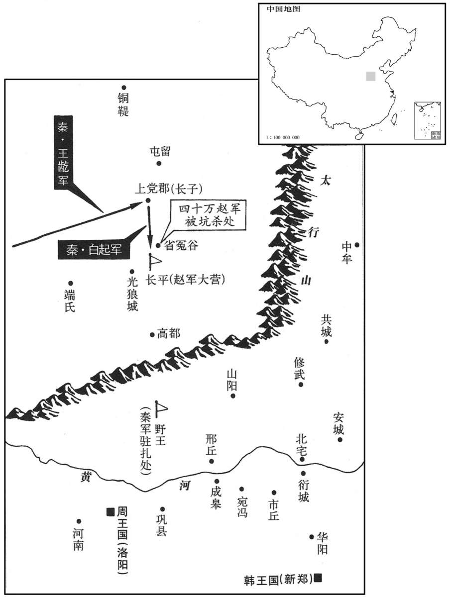

公元前260年资治通鉴：本年记事、原文与白话对照
按原书编年位置阅读；追叙和史论不等于本年发生的事件。白话采用所据译本，缺译不以生成译文补齐。
卷5 · 本年记事
公元前260年 · 赧王在位第55年
五十五年〔（辛丑、前二六○）〕
本年事件索引（现代整理）

本年形势与背景参考图
秦左庶长王龁攻上党，拔之。〔长，知丈翻。龁，音纥，杜佑恨勿翻；康胡骨切。〕上党民走赵。赵廉颇军于长平。〔司马彪志：上党泫氏县有长平亭。括地志：长平故城，在上党县西四十一里。杜佑曰：白起坑赵卒于长平，有头颅山，筑台于垒中，因山为台。宋白曰：秦坑赵卒于长平，今泽州之北高平县西北二十一里长平故城是也。颇，普何翻。泫，工玄翻。颅，音卢。垒，鲁水翻。〕以按据上党民。〔毛晃曰：按，于旰翻，抑也，止也，据也。余谓此据、按二字，按字当以抑止为义。据，依据也，引援也，拒守也。言廉颇依据上党地险，引援上党之民而拒守也。康曰：按，音遏；此义亦通，但按字无遏音。〕王龁因伐赵。赵军数战不胜，〔数，所角翻。〕止〔【章：十二行本“止”作“亡”；乙十一行本同；孔本同；退斋校同。】〕一裨将、四尉。〔裨将，军之副将也。尉，军中诸部都尉也。裨，频弥翻。将，即亮翻。〕赵王与楼昌、虞卿谋，〔风俗通曰：凡氏之兴九事，氏于号者，唐、虞、夏、殷是也，氏于国者，齐、鲁、宋、卫是也；氏于事者，巫、卜、陶、匠是也；氏于字者，伯、仲、叔、季是也；氏于谥者，戴、武、宣、穆是也。〕楼昌请发重使为媾。〔媾，音构，和也。〕虞卿曰：“今制媾者在秦，秦必欲破王之军矣；虽往请媾，秦将不听。不如发使以重宝附楚、魏，楚、魏受之，则秦疑天下之合从，〔从，子容翻。〕媾乃可成也。”王不听，使郑朱媾于秦，秦受之。王谓虞卿曰：“秦内郑朱矣。”〔虞卿时为赵之相。〕对曰：“王必不得媾而军破矣。何则，天下之贺战胜者皆在秦矣。夫郑朱，贵人也，秦王、应侯必显重之以示天下。〔夫，音扶。应，于陵翻。〕天下见王之媾于秦，必不救王；秦知天下之不救王，则媾不可得成矣。”既而秦果显郑朱而不与赵媾。〔史言赵之丧师蹙国，不特以赵括代廉颇之故，亦由不用虞卿之计也。〕
秦国派左庶长王进攻上党，予以攻克。上党百姓逃往赵国。赵国派廉颇率军驻守长平，接应上党逃来的百姓。王于是挥兵攻打赵国。赵军迎战，几战都不胜，一员副 将和四名都尉阵亡。赵王与楼昌、虞卿商议，楼昌建议派地位高的使节与秦国媾和。虞卿反对说：“和与不和，控制权在秦国；秦国现在已下决心要大破赵军。我们即使去求和，秦国也不会同意。我们不如派出使者用贵重珍宝拉拢楚国、魏国。楚国、魏国一接受，秦国就会疑心各国重新结成了抗秦阵线，那时媾和才可成功。”赵王不听虞卿的意见，仍派郑朱赴秦国求和。秦国接待了郑朱。赵王便对虞卿说：“秦国接纳郑朱了。”虞卿说：“大王肯定见不到和谈成功而赵军就被击破了。为什么呢？各国都派使者赴秦国祝贺胜利，郑朱是赵国地位很高的人，秦王、应侯肯定会把郑朱来求和的事向各国宣扬，各国看到赵王派人去求和，便不会再出兵援救赵国；秦国知道赵国孤立无援，就愈发不肯讲和了。”不久，秦国果然大肆宣扬郑朱来使，而不与赵国进行和谈。
秦数败赵兵，廉颇坚壁不出。赵王以颇失亡多而更怯不战，怒，数让之。〔数，所角翻，屡也。败，补迈翻。〕应侯又使人行千金于赵为反间，曰：“秦之所畏，独畏马服君之子赵括为将耳！〔间，古苋翻。将，即亮翻。〕廉颇易与，且降矣！”〔易，弋豉翻。降，户江翻。〕赵王遂以赵括代颇将。蔺相如曰：“王以名使括，若胶柱鼓瑟耳。〔鼓瑟者，弦有缓急，调弦之缓急在柱之运转，若胶其柱，则弦不可得而调，缓者一于缓，急者一于急，无活法矣。〕括徒能读其父书传，不知合变也。”〔兵以正合，以奇变。传，直恋翻。〕王不听，初，赵括自少时学兵法，以天下莫能当；尝与其父奢言兵事，奢不能难，〔少，诗照翻。难，乃旦翻，辩折之也。〕然不谓善。括母问其故，奢曰：“兵，死地也，而括易言之。〔易，以豉翻，轻也。〕使赵不将括则已；若必将之，〔将，即亮翻；下同。〕破赵军者必括也。”及括将行，其母上书，言括不可使。王曰：“何以？”〔上，时掌翻。言以何事知其不可使也。〕对曰：“始妾事其父，时为将，身所奉饭而进食者以十数，〔奉，读曰捧。〕所友者以百数，王及宗室所赏赐者，尽以与军吏士大夫；受命之日，不问家事。今括一旦为将，东乡而朝，军吏无敢仰视之者；〔将，即亮翻。朝，直遥翻。〕王所赐金帛，归藏于家，而日视便利田宅可买者买之。王以为如其父，父子异心，愿王勿遣！”王曰：“母置之，吾已决矣！”〔置，止也，废也。置之，言废置此事，止勿言也。〕母因曰：“即如有不称，妾请无随坐！”〔称，尺证翻。不称，言不胜任也。随坐，相随而坐罪也。观此，则知古者败军之将，罪并及其家。〕赵王许之。
赵兵屡次被秦军打败，廉颇便下令坚守营垒，拒不出战。赵王以为廉颇损兵折将后更加胆怯，不敢迎敌，气愤得多次斥责他。应侯范睢又派人用千金去赵国施行反间计，散布说：“秦国所怕的，只是马服君赵奢的儿子赵括做大将。廉颇好对付，而且他也快投降了！”赵王中计，便用赵括代替廉颇为大将。蔺相如劝阻说：“大王因为赵括有些名气就重用他，这是粘住调弦的琴柱再弹琴呀！赵括只知道死读他父亲的兵书，不知道随机应变。”赵王仍是不听。起初，赵括从小学习兵法时，就自以为天下无人可比。他曾与父亲赵奢讨论兵法，赵奢也难不倒他，但终究不说他有才干。赵括的母亲询问原因，赵奢说：“带兵打仗，就是出生入死，而赵括谈起来却很随便。赵国不用他为大将也还罢了，如果一定要用他，灭亡赵军的必定是赵括。”待到赵括将要出发，他的母亲急忙上书，指出赵括不能重用。赵王问：“为什么？”回答说：“当年我侍奉赵括的父亲，他做大将时，亲自去捧着饭碗招待的有几十位，他的朋友有 几百人。大王及宗室王族给他的赏赐，他全部分发给将士。他自接受命令之日起，就不再理睬家事。而赵括刚刚做了大将，就向东高坐，接受拜见，大小军官没人敢抬头正脸看他。大王赏给他的金银绸缎，全部拿回家藏起来，每天忙于察看有什么良田美宅可买的就买下。大王您以为他像父亲，其实他们父子用心完全不同。请大王千万不要派他去。”赵王却说：“老太太你不用管，我已经决定了。”赵括母亲便说：“万一赵括出了什么差错，我请求不要连累我治罪。”赵王同意了赵母的请求。
秦王闻括已为赵将，乃阴使武安君为上将军而王龁为裨将，令军中：“有敢泄武安君将者斩！”赵括至军，悉更约束，〔龁，恨勿翻。更，工衡翻。〕易置军吏，出兵击秦师。武安君佯败而走，〔佯，音羊，诈也。〕张二奇兵以劫之。〔劫，势胁也。说文：人欲去，以力胁止曰劫。〕赵括乘胜追造秦壁，〔造，七到翻，诣也。〕壁坚拒不得入，奇兵二万五千人绝赵军之后，又五千骑绝赵壁间。〔骑，奇寄翻。〕赵军分而为二，粮道绝。武安君出轻兵击之，赵战不利，因筑壁坚守以待救至。秦王闻赵食道绝，自如河内发民年十五以上悉诣长平，遮绝赵救兵及粮食。〔如，往也。上，时掌翻。遮者，遮断其路。〕齐人、楚人救赵。赵人乏食，请粟于齐，王〔【章：十二行本“王”上有“齐”字；乙十一行本同；孔本同；张校同；退斋校同。】〕弗许。周子曰：“夫赵之于齐、楚，捍蔽也，〔夫，音扶。〕犹齿之有唇也，唇亡则齿寒；今日亡赵，明日患及齐、楚矣。救赵之务，宜若奉漏瓮沃焦釜然。〔奉，读曰捧；言惟恐不及也。〕且救赵，高义也；却秦师，显名也；义救亡国，威却强秦。不务为此而爱粟，为国计者过矣！”齐王弗听。九月，赵军食绝四十六日，皆内阴相杀食。急来攻〔【章：十二行本“攻”下有“秦”字；乙十一行本同；孔本同；张校同；退斋校同。】〕垒，〔史言急来攻垒，赵括为计如此耳。下言欲出而不能出，赵括自出而死，其势可见。〕欲出为四队，四，五复之，不能出。〔言括欲分其卒为四队，更攻秦垒，自一队至四队，至五则复之，而不能出也。〕赵括自出锐卒搏战，秦人射杀之。〔射，而亦翻。〕赵师大败，卒四十万人皆降。〔降，户江翻。〕武安君曰：“秦已拔上党，上党民不乐为秦而归赵。赵卒反复，非尽杀之，恐为乱。”乃挟诈而尽坑杀之，遗其小者二百四十人归赵，〔乐为，上音洛；下于伪翻，又音如字。四十余万人皆死，而独遗小者二百四十人得归赵，此非得脱也，白起之谲也。强壮尽死，则小弱得归者必言秦之兵威，所以破赵人之胆，将以乘胜取邯郸也；为应侯所沮，故白起之计不得行耳。谲，古穴翻。邯郸，音寒丹。应，于陵翻。沮，在吕翻。卒，子恤翻。〕前后斩首虏四十五万人；赵人大震。〔此言秦兵自挫廉颇至大破赵括前后所斩首虏之数耳。兵非大败，四十万人安肯束手而死邪！〕
秦王听说赵 括已经上任为大将，便暗中派武安君白起为上将军，改王为副将，下令军中：“谁敢泄露白起为上将军的消息，格杀勿论！”赵括到了赵军中，全部推翻原来的规定，调换军官，下令出兵攻击秦军。白起佯装战败退走，预先布置下两支奇兵准备截击。赵括乘胜追击，直达秦军营垒，秦军坚守，无法攻克。这时，秦军一支二万五千人的奇兵已切断了赵军的后路，另一支五千人的骑兵堵截住赵军返回营垒的通道，赵军被一分为二，粮道也断绝。武安君白起便下令精锐轻军前去袭击，赵军迎战失利，只好坚筑营垒等待救 兵。秦王听说赵军运粮通道已经切断，亲自到河内征发十五岁以上的百姓全部调往长平，阻断赵国救兵及运粮。齐国、楚国援救赵国。赵军缺乏粮食，向齐国请求接济，齐王不给。周子说：“赵国对于齐国、楚国来说，是一道屏障，就像牙齿外面的嘴唇，唇亡则齿寒。今天赵国灭亡了，明天灾祸就会降临齐国、楚国。援救赵国这件事，应该像捧着漏瓦罐去浇烧焦了的铁锅那样，刻不容缓。何况援救赵国是高尚的道义；抵抗秦军，是显示威名的好事。必须主持正义援救亡国，显示兵威击退强秦。不致力于此事反而爱惜粮食，这样为国家决策是个大错！”齐王仍是不听。九月，赵军已断粮四十六天，士兵们都在内部暗中残杀，互相吞吃。赵括穷急，便下令进攻秦军营垒，想派出四支队伍，轮番进攻，到第五次，仍无法突围。赵括亲自率领精兵上前肉搏，被秦兵射死。赵军于是全线崩溃，四十万士兵全部投降。白起说：“当初秦军已攻克上党，上党百姓却不愿归秦而去投奔赵国。赵国士兵反复无常，不全部杀掉，恐怕会有后乱。”于是使用奸计把赵国降兵全部活埋，只放出二百四十个年岁小的回到赵国，前后共杀死四十五万人，赵国大为震惊。